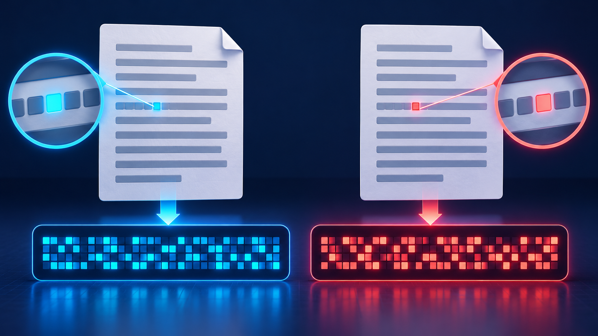

Gerar Hash (SHA-256)
Um hash é uma "impressão digital" dos dados: uma sequência de tamanho fixo calculada a partir do conteúdo. Qualquer mudança nos dados, por menor que seja, gera um hash completamente diferente. Escolha o que você quer proteger.
O algoritmo SHA-256 lê todos os bytes e produz um resumo de 256 bits (64 caracteres em hexadecimal), não importa se a entrada tem 1 letra ou 1 GB.
Comparar com outros algoritmos

Vamos alterar apenas 1 bit do último byte dos dados e calcular o hash de novo. Repare quanto o resultado muda.
Quem receber a mensagem ou o arquivo pode calcular o hash de novo e comparar com este. Se forem iguais, os dados não foram alterados. Salve o hash e abra a tela de verificação.
Abrir a tela de verificação →